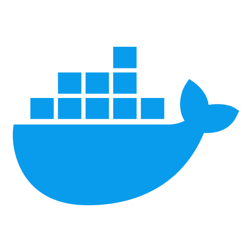

What is Containerization?

Definition
Containerization is a strategy of bringing Virtualization to the OS-level. This technique is more effective than Virtualization since there is no guest OS to utilize a host’s OS and such do not have to share relevant libraries and resources. Virtual machines, however, have to share the host’s OS and all its resources.
Containerization is a lightweight alternative to full machine virtualization that involves encapsulating an application in a container with its OS. Containerization boots up in a shorter amount of time than virtualization because the container shares the host’s OS and holds only applications that are related to binaries and libraries.
Advantages of Containerization
- Containers are lightweight so you can deploy multiple containers on a single server
- Only have one OS to maintain so scaling up becomes easy without needing more server space
Disadvantages of Containerization
- All containers on a host machine must be designed to run on the same kind of OS.
- Because the OS is shared, a security vulnerability in the OS kernel threatens all containers
In the above diagram, there is one host Operating system shared by all containers. The container contains only applications specific to libraries isolated from other containers.
How to Install a Containerization Tool
Docker is an example of a containerization platform. It runs containers independent of the OS. Docker is the virtualization of the operating system, which denotes the development and delivery of products and packages in the form of containers. Read more here: Is Docker a real game changer for Container Management?
Docker is a popular containerization tool. Click here for instructions on how to install docker on Windows 10. Note: There are different installation paths on whether you have windows 10 Home or Pro. Click here to find out which you have.